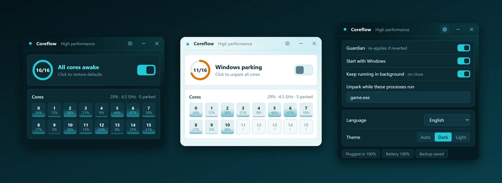
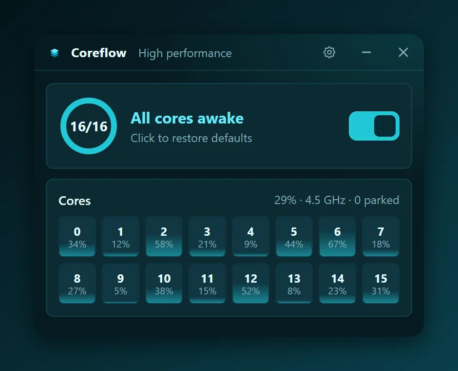
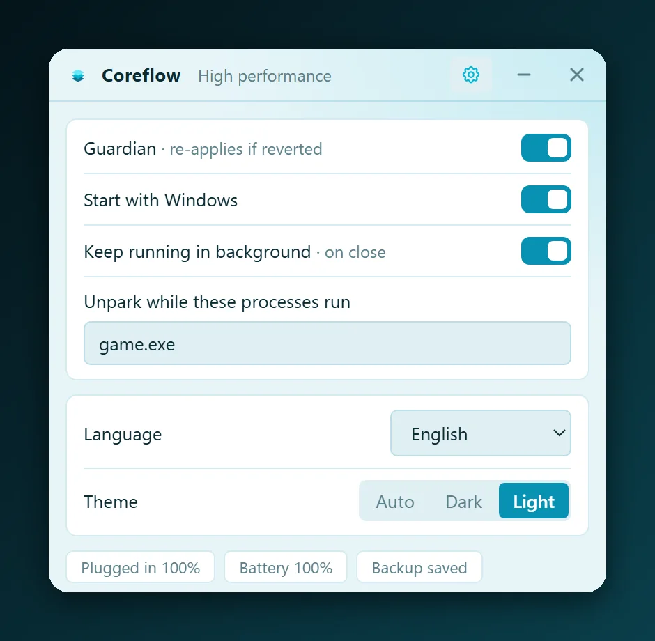

Un clic, con copia
Guarda tus valores originales y los restaura con un clic.
Windows 10/11 · Gratis · Licencia MIT
Una pequeña app de bandeja que desactiva el aparcado de núcleos de Windows con un clic, te muestra qué hace cada núcleo y mantiene el ajuste en su sitio.
Windows 10/11 · Tauri y Rust · sin telemetría

Funciones
Windows aparca núcleos inactivos para ahorrar energía. Despertarlos cuesta latencia; Coreflow te deja decidir.
Guarda tus valores originales y los restaura con un clic.
Uso, frecuencia y estado de aparcado de cada núcleo lógico, en vivo.
Vuelve a aplicar el ajuste si Windows o una herramienta del fabricante lo revierte.
Desaparca solo mientras se ejecuta juego.exe o lo que añadas.
Vive en la bandeja, abre al instante y gasta unos 2 MB de RAM en reposo (medido en el equipo del autor).
Para scripts: coreflow --on, --off y --status.
Desaparcar no hace más rápida una CPU por sí solo: quita latencia de despertar a costa de algo más de consumo y calor. Mide antes de creer promesas de FPS.


Dudas
No por sí sola. Elimina la latencia de despertar un núcleo aparcado, lo que puede notarse en tirones o cargas a ráfagas.
Sí. Antes del primer cambio guarda tus valores originales y puedes restaurarlos con un clic.
No. Sin telemetría y sin acceso a la red. El código está en GitHub.